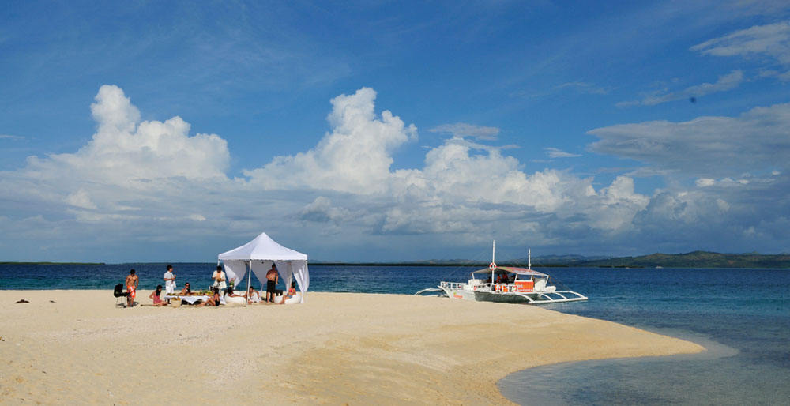

ISLANDS BANCA CRUISES. Snorkel in marine sanctuaries or bask under the sun on a white sand bar by going island-hopping with Islands Banca Cruises.
Go island-hopping
One of the best ways to enjoy the beaches of Cebu is to go on an island-hopping trip. Several boat operators in Mactan Island offer tour packages to nearby islets but your best option is to book a trip with Islands Banca Cruises.
Behind the service is The Islands Group, a Cebu-based group of companies started by Jay Aldeguer out to make travel in the Philippines “an unforgettable experience.” The company started with Islands Souvenirs and has expanded into other sectors to meet the needs of travelers.
When it comes to island-hopping, the journey is now made just as important as the destination, with an Island Banca Cruises crew that is customer-focused and well-trained to attend to the guests’ every need and the reconfigured banca to maximize the island-hopping experience for its guests.
Unlike the banca of old, Island Banca Cruises has a new design, which now sports an expanded deck for optimal sunbathing and sightseeing. Beanbag seats are plentiful and an Islands Banca Cruises trademark feature, along with cushioned seats. An iPod dock, wireless Internet access, fresh towels, cold beverages and snacks are additional touches that really make the island-hopping experience a memorable one.
IBC also put together packages and services that a destination can be proud to offer its visitors. Activities and customizable trips such as sunset cruises, lechon and barbecue picnics on board the banca or on a sandbar, theme parties or a candle-lit dinner for two, can all be arranged. Snorkeling, scuba diving, fish feeding, sea kayaking and dolphin watching are some of the many possibilities while on an Islands Banca Cruise.
PANDANON ISLAND. This white sand bar on Pandanon Island near Bohol offers one of the best beaches in Central Visayas. It's one of the stops of Islands Banca Cruises.
IBC has also put together packages and services that a destination can be proud to offer its visitors. Activities and customizable trips such as sunset cruises, lechon and barbecue picnics on board the banca or on a sandbar, theme parties or a candle-lit dinner for two, can all be arranged.
Snorkeling, scuba diving, fish feeding, sea kayaking and dolphin watching are some of the many possibilities while on an Islands Banca Cruise.
Islands Banca Cruises packages include:
- Pandanon + Nalusuan for P6,500
This package brings guests to the Nalusuan Marine Sanctuary and the Pandanon white sandbar. The booking is for a maximum of 10 persons, extra persons will be charged P300 each. - Gilutungan + Pandanon for P6,500
Snorkel and fish-feeding in Gilutungan then off to the Pandanon white sandbar. The booking is for a maximum of 10 persons, extra persons will be charged P300 each. - Nalusuan + Gilutungan for P4,850
Enjoy snorkeling in Cebu’s rich marine environment in the 2 marine sanctuaries in Mactan. The booking is for a maximum of 10 persons, extra persons will be charged P300 each.
Travelers can also add “trip enhancers” to their packages from packed lunches at P150 each, seafood lunch at P450, lechon at P4,600 to massage services P1,000.
To book your cruise, call (tap on numbers to call) 516-1903 or 0932-844-0990 or email info@islandsbanca.com.